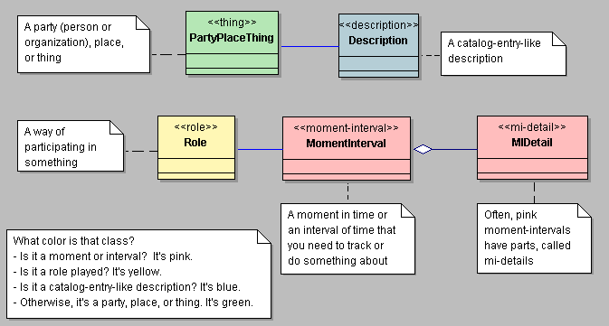

CQRS and Event Sourcing: First steps to a Functional Architecture
- Rodolfo de Paula - Locaweb since 2016
Introducing myself
- 1987 Dbase Fox Clipper Sidekick - José Ramalho
- 1989 Structured Analysis, Data Flow Diagram, Entity Relationship Model, Events List - Ed Yourdon, Tom De Marco, Chris Gane, Trish Sarson, L.Constantine, P.Chen
- 1993 First professional stack: FoxPro Novell Netware
- 1996 ERP for ~250 people over 4 countries
- 2000 Java <-> OO Gof J2EE Patterns UML RUP CMMi
- 2006 WTF moment: Peter Coad, Martin Fowler
- 2007 Feature Driven Design, Streamlined Object Modeling, Resources Agents Events
- 2008 Domain Driven Design (Eric Evans), Scala (not FP)
- 2010 Event Sourcing, CQRS - Greg Young
- 2014 Payments solution for a top 3 e-Commerce webstore
Java Modeling in Color with Uml

Streamlined Object Modeling
| People | Actor |
| Role | |
| Places | Place & OuterPLace |
| Things | Item & Specific Item |
| Assembly & Party | |
| Container & Content | |
| Group & Member | |
| Events | Transaction |
| Composite Transaction & Line Item | |
| Follow-up Transaction |
REA - Resources, Events and Agents
Patterns hangover: some vocabulary needed - Martin Fowler
Current Radar
- DDD - Domain Driven Design - Eric Evans
- CQS - Command - query separation - Bertrand Meyer
- CQRS - Command Query Responsability Segregation - Greg Young
- ES - Event Sourcing
Motivations / when to use it
- Business, events focus
- Ability to put the system in any prior state (regressions, projections)
- Avoid being legacy: you can react / improve your solution by versioning or adding commands, events or read models
- It scales much better and easily, its very testing friendly: BDD, etc
- It is aligned with Functional Programming
- It is conceptually very simple and it works !
When to avoid it
- You don't need a Domain Model at all
- You have a CRUD application and it works
- You just think it is too complicated
Domain Driven Design
- 2003 - Eric Evans book
- 2009 - blog.locaweb.com.br
- Have you seen a success case, anywhere ?
- Really ?
Usual architecture - by Greg Young 2008

- It's just yet another non OO legacy abstraction full of side effects, no matter it's JVM, JS, Ruby, Python, Elixir, Go, etc
How do you scale it ?
- Since its very depedent to DB ?
- What if 80% are reads and 20% are writes ?
- For writing, normalize DB schema (~3NF)
- For queries, add indexes and denormalize (1NF)
- If you are using an ORM, what kind of object are you modeling ? What trade offs you did ?
Domain Driven Design failures - the usual suspects
- Missing the Big Picture. Not Gof Patterns
- Strategic versus Tactical Modeling
- Missing the importance of Ubiquitous Language
- Actually, you cannot implement DDD with similar architectures
First steps to improve
- Tracks the client intent with commands. Commands has an ID, are immutable, imperative and may fail
- Commands adds business value since it can express the client intentions
- CQS - methods returning something must be read only. Only void methods can mutate state
- CQRS - two components: one for writing and other for reading
CRQS

- Now the read model is mapped from db to dto. No impedance mismach. Much simpler to implement / scale.
- Now the write model needs only a query: get aggregate root by id
Missing parts
- What will be written ?
- How to syncronize with read model ?
- Introducing Event Sourcing. ES is probably from 70's, before RDBMS. I did it myself in 1996.
Event Sourcing

- Now you can also estimate your user stories better by enumerating your DTOs, commands and events (FDD) and client, domain and read models
- You also became a bit closer of a Functional Architecture
CQRS + Event Sourcing

Implementation Approaches
Real world: Mr. Krabs

- Replaced a monolith solution: yeah, microservices
- Write side: easy to scale. Concurrent commands: just retry, optimistic locking, leverage RDBMS trustness
- Read side: projections are harder to scale. Started with ORM for read model then refactored to 1NF or in memory
- Very easy to debug/inspect an order with many payment instruments: the power of events
Current status
- Keyvent playground: finally some code
- Eventstore
- Lagom...framework
- The dilema of CQRS/ES frameworks
- Sam Newman's 8 Principles of Microservices: Modelled Around Business Domain
- Event Sourcing is actually just functional code